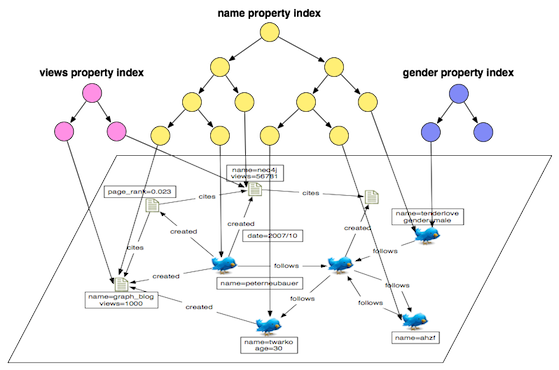

An index is a data structure that allows for the fast retrieval of elements by a particular key/value pair. The index, as implemented in Blueprints, is constrained to be uniform in type among the indexed elements (vertices or edges). Lookups are usually in log(n) time where n is the number of elements in the index. There are two types of indexing structures supported by Blueprints. These are reflected in the two respective interfaces: KeyIndexableGraph and IndexableGraph.
A KeyIndexableGraph is a graph that supports the automatic indexing of a vertex or edges by its key/value pair properties. When a method requires access to an element by a key/value, then an appropriate key index can be retrieved. Otherwise, a linear scan must take place. Such methods include Graph.getVertices(String key, Object value) and Graph.getEdges(String key, Object value). The methods of KeyIndexableGraph are provided below.
public <T extends Element> void dropKeyIndex(String key, Class<T> elementClass);
public <T extends Element> void createKeyIndex(String key, Class<T> elementClass);
public <T extends Element> Set<String> getIndexedKeys(Class<T> elementClass);An IndexableGraph is a Graph that supports the indexing of its vertices and edges. An index is a data structure that allows for the fast retrieval of an element by a particular key/value pair. The IndexableGraph interface has the following methods:
public <T extends Element> Index<T> createIndex(String indexName, Class<T> indexClass, Parameter... indexParameters);
public <T extends Element> Index<T> getIndex(String indexName, Class<T> indexClass);
public Iterable<Index<? extends Element>> getIndices();
public void dropIndex(String indexName);An index requires the developer to manually put, get, and remove elements from the index. To create a manual index of vertices, do the following:
Index<Vertex> index = graph.createIndex("test-idx", Vertex.class);The Index interface has the following methods:
public long count(String key, Object value);
public String getIndexName();
public Class<T> getIndexClass();
public void put(String key, Object value, T element);
public Iterable<T> get(String key, Object value);
public Iterable<T> query(String key, Object value);
public void remove(String key, Object value, T element);Given the index object created previous, to add, get, query, and remove a vertex from this index, do the following:
index.put("name","peter",vertex);
Iterable<Vertex> results = index.get("name","peter");
Iterable<Vertex> results = index.query("name", "PeTeR"); // assuming some case-insensitive index
index.remove("name","peter",vertex);Finally, The index construction method createIndex() has a Parameter “var arg” as its final argument. Some underlying graph implementations support the passing of parameters to tweak the underlying indexing model — e.g. case insensitive querying. Please refer to the specifics of each IndexableGraph implementation for their respective support parameters.